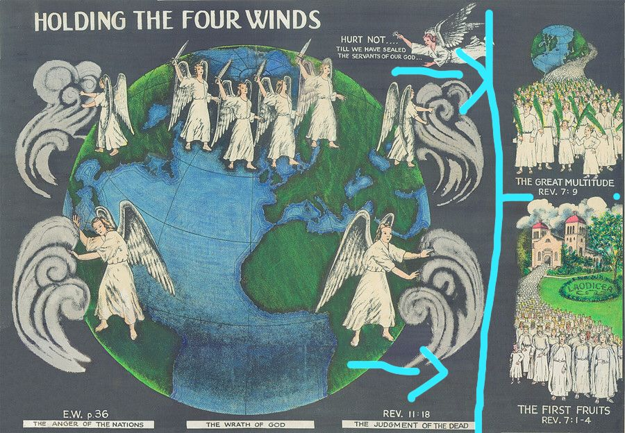

THE FIRST FRUITS
1 Peter 4:17 For the time is come that judgment must begin at the house of God: and if it first begin at us, what shall the end be of them that obey not the gospel of God?
We remember the parable of wheat and tares. The field been the church. Wheat are the faithful and tares are the wicked. They grow together until the harvest. in the time of harvest the separation is done.
“I then saw the third angel. Said my accompanying angel, “Fearful is his work. Awful is his mission. He is the angel that is to select the wheat from the tares, and seal, or bind, the wheat for the heavenly garner. These things should engross the whole mind, the whole attention.” (EW 118)
The separation is in the time of harvest (judgement period) which begins with the church.
Crops gathered first from the field are first fruits. The 144,000 been the first to be gathered (seal) of the living, makes them first fruits of the living. When first fruits are gathered. The second fruits are than gathered or the whole field. The second fruits are the great multitude that no man could number out of all nations rev 7:9. The harvest (judgement of the living) is seen to produce two groups of people the 144000 from the church and the great multitude from all nations. The connection is that the first fruits from the church will be sent to gather the second fruits from all nations.
We have first fruits of the dead, Jesus and those that arose with him.(DA 785.4 786.2) 1 Corin 15:20) the 144,000 are the first fruits of the living.
Let’s hear what Isaiah says
Isaiah 66:15-20 For, behold, the LORD will come with fire, and with his chariots like a whirlwind, to render his anger with fury, and his rebuke with flames of fire.
👇👇👇👇👇
For by fire and by his sword will the LORD plead with all flesh: and the slain of the LORD shall be many...And I will set a sign among them, and I will send those that escape of them unto the nations, to Tarshish, Pul, and Lud, that draw the bow, to Tubal, and Javan, to the isles afar off, that have not heard my fame, neither have seen my glory; and they shall declare my glory among the Gentiles.
And they shall bring all your brethren for an offering unto the LORD out of all nations upon horses, and in chariots, and in litters, and upon mules, and upon swift beasts, to my holy mountain Jerusalem, saith the LORD, as the children of Israel bring an offering in a clean vessel into the house of the LORD.
The slain by God will be many. those that escape the slaughter are sent to all nations preaching the gospel and a great multitude is saved from all nations.
Micah 4:1 But in the last days it shall come to pass, that the mountain of the house of the LORD shall be established in the top of the mountains, and it shall be exalted above the hills; and people shall flow unto it. And many nations shall come, and say, Come, and let us go up to the mountain of the LORD, and to the house of the God of Jacob; and he will teach us of his ways, and we will walk in his path.
This message calls for every honesty SDA to deal truly with our selves it’s our wickedness that has brought this great and dreadful day on us. Gods call is
Isaiah 52:1 Awake, awake; put on thy strength, O Zion; put on thy beautiful garments, O Jerusalem, the holy city: for henceforth there shall no more come into thee the uncircumcised and the unclean.
Nahum 1:15 O Judah, keep thy solemn feasts, perform thy vows: for the wicked shall no more pass through thee; he is utterly cut off.
Zechariah 14:21 and in that day there shall be no more the Canaanite in the house of the LORD of hosts.
Ezekiel 9 shows the end of sin and sinners in the church. Hence it’s the fearful separation of wheat and tares.
Who planted the tares? Satan .
Who would want the tares to be part of God’s church? Satan.
When the church is purified than will it reach this condition 👇👇👇
Ephesians 5:27 That he might present it to himself a glorious church, not having spot, or wrinkle, or any such thing; but that it should be holy and without blemish.
“The true people of God, who have the spirit of the work of the Lord and the salvation of souls at heart, will ever view sin in its real, sinful character. They will always be on the side of faithful and plain dealing with sins which easily beset the people of God. Especially in the closing work for the church, in the sealing time of the one hundred and forty-four thousand who are to stand without fault before the throne of God, will they feel most deeply the wrongs of God’s professed people. This is forcibly set forth by the prophet’s illustration of the last work under the figure of the men each having a slaughter weapon in his hand. One man among them was clothed with linen, with a writer’s inkhorn by his side. “And the Lord said unto him, Go through the midst of the city, through the midst of Jerusalem, and set a mark upon the foreheads of the men that sigh and that cry for all the abominations that be done in the midst thereof.”
“Who are standing in the counsel of God at this time? Is it those who virtually excuse wrongs among the professed people of God and who murmur in their hearts, if not openly, against those who would reprove sin? Is it those who take their stand against them and sympathize with those who commit wrong? No, indeed! Unless they repent, and leave the work of Satan in oppressing those who have the burden of the work and in holding up the hands of sinners in Zion, they will never receive the mark of God’s sealing approval. They will fall in the general destruction of the wicked, represented by the work of the five men bearing slaughter weapons. Mark this point with care: Those who receive the pure mark of truth, wrought in them by the power of the Holy Ghost, represented by a mark by the man in linen, are those “that sigh and that cry for all the abominations that be done” in the church. Their love for purity and the honor and glory of God is such, and they have so clear a view of the exceeding sinfulness of sin, that they are represented as being in agony, even sighing and crying. Read the ninth chapter of Ezekiel. (3T266)
Brother you have to separate your self from sin.
And warn others of the sins that a common in our churches warn of the destruction of Ezekiel 9
Isaiah 58:1 Cry aloud, spare not, lift up thy voice like a trumpet, and shew my people their transgression, and the house of Jacob their sins.
“God is sifting His people. He will have a clean and holy church....As we near the judgment, all will manifest their true character, and it will be made plain to what company they belong. The sieve is moving. Let us not say: Stay Thy hand, O God. The church must be purged, and it will be. ( 1T 99.4-100)
“But the days of purification of the church are hastening on apace. God will have a people pure and true. In the mighty sifting soon to take place we shall be better able to measure the strength of Israel. The signs reveal that the time is near when the Lord will manifest that His fan is in His hand, and He will thoroughly purge His floor” 5T 79.4
Note here the slaying is called the clean work
“Many, I saw, were flattering themselves that they were good Christians, who have not a single ray of light from Jesus. They know not what it is to be renewed by the grace of God. They have no living experience for themselves in the things of God. And I saw that the Lord was whetting His sword in heaven to cut them down. Oh, that every lukewarm professor could realize the clean work that God is about to make among His professed people! Dear friends, do not deceive yourselves concerning your condition. You cannot deceive God. Says the True Witness: “I know thy works.” ( 1T 190 )
Isa. 63:1-3, "Who is this that cometh from Edom, with dyed garments from Bozrah? this that is glorious in his apparel, travelling in the greatness of his strength? I that speak in righteousness, mighty to save. Wherefore art thou red in thine apparel, and thy garments like him that treadeth in the winefat? I have trodden the winepress alone; and of the people there was none with Me: For I will tread them in mine anger, and trample them in My fury; and their blood shall be sprinkled upon My garments, and I will stain all My raiment."
The picture is not a pleasant one to look at, but it is true. It is God's "strange work." Edom is another name for Esau Gen. 25:30. Esau had his name changed because he sold his birthright for a bowl of pottage. The class here are termed Edom because they have sold their birthright for self-gratification to satisfy lust, the god of appetite (disregard of health reform), Bozrah means "sheepfold," a symbol of the church.
When the purification is done the church will be ready to face the time of trouble (national Sunday law)
Clad in the armor of Christ’s righteousness, the church is to enter upon her final conflict. “Fair as the moon, clear as the sun, and terrible as an army with banners” (Song of Solomon 6:10), she is to go forth into all the world, conquering and to conquer. (Pk 725) read also Joel 2:2-10. Jere 51:20-23
Rev14:4 These are they which follow the Lamb whithersoever he goeth.
To understand what it means to follow the lamp, we must first tress 🔎🔎 the steps of the lamp (Jesus).
He was first in heaven ,He come on earth, dead resurrected and went back to heaven, 1844 he want in the most holy place. during the sealing he comes to slay the wicked . Last he comes to gather the saints to heaven.
Each of these movements is accompanied with a message (on earth).
when he was in heaven he gave sacrifice of beast as a message of the Israelites. When he was on earth dead and resurrected and went to heaven,the message was that of a risen savior. When he entered the mostly holy the message is the sanctuary message in connection with the judgement of the dead. Now that he is to perform a cleaning work Ezekiel 9, His message is in the “shepherds rod”
Micah 6:9 The LORD'S voice crieth unto the city, and the man of wisdom shall see thy name: hear ye the rod, and who hath appointed it.
Micah 7:14 Feed thy people with thy rod, the flock of thine heritage, which dwell solitarily in the wood, in the midst of Carmel: let them feed in Bashan and Gilead, as in the days of old.
The primary purpose of The Shepherd's Rod is to unlock the long-concealed mystery concerning the ever-challenging and much discussed subject of the 144,000 (Rev. 14:1), with the central object in view of bringing about among God's people that "thorough reformation" foretold by the Spirit of Prophecy (Testimonies, Vol. 8, p. 251).
These truths, Divinely revealed, are of supreme importance to the church just now because of the trying, sifting circumstances through which God's people are soon to pass. Being vital concerns to salvation, they call for decided action from ministry and laity alike to separate themselves from all worldliness and to anchor themselves on the Solid Rock by obedience to all the truth known to the church, if they would escape the forthcoming ruin that is to take every sinner.
Its dominant doctrinal concern being the truth of the 144,000, and a correct understanding of it being a life-and-death matter to all, the Rod unfolds it from several different angles, each urging the Denomination to prepare for the glorious deliverance of the saints and against the inglorious destruction of the sinners as foretokened by the marking and slaying recorded in Ezekiel 9.
No new denomination is advocated, on the contrary, such is unmitigatedly opposed. And finally, irrefutable proof is brought forth that the Seventh-day Adventist Denomination has been the instrumentality of God since 1844 to carry on His work on earth, and that the Rod adds "power and force" "to the third message." -- Early Writings, p. 277.
Shepherds rod track 1 pg 5
Following the lamp is simply to keep pace with the light 💡 God sends, by personal investigation.
CONCLUSION
“Not all who profess to keep the Sabbath will be sealed. There are many even among those who teach the truth to others who will not receive the seal of God in their foreheads. They had the light of truth, they knew their Master's will, they understood every point of our faith, but they had not corresponding works. These who were so familiar with prophecy and the treasures of divine wisdom should have acted their faith. They should have commanded their households after them, that by a well-ordered family they might present to the world the influence of the truth upon the human heart. 5T 213.2
“Not one of us will ever receive the seal of God while our characters have one spot or stain upon them. It is left with us to remedy the defects in our characters, to cleanse the soul temple of every defilement. Then the latter rain will fall upon us as the early rain fell upon the disciples on the Day of Pentecost. 5T 214.2
THE END

THE FOUR CLASSES OF REDEEMED
introduction
The ensuing study is given to prove that the great multitude of Rev. 7:9, are living saints, who, with the 144,000, are to be translated at the second coming of Christ. All the saved in the history of the world, from righteous Abel to the close of probation, are divided into four great, separate, and distinct classes, as follows:
Class 1: The 144,000 of Rev. 7; namely, the twelve tribes of Israel of the promise; a special company with a special experience.
Class 2: The translated at the coming of Christ in the clouds (the great multitude of Rev. 7:9).
Class 3: The millions of all ages who were martyred for their faith.
Class 4: "Those who were once zealous in the cause of Satan, but who, plucked as brands from the burning, have followed their Saviour with deep, intense devotion." Great Controversy, page 665.
Earthly nations and governments glory in the splendid order of their armies, and their uniforms are made according to ranks, so that by the uniform, one can recognize the rank of a soldier, and to which division or regiment he belongs. We must not suppose the great God has less order for His redeemed than earthly nations for their armies. We know God has far better order than any earthly government can ever devise. An endeavor shall be made to prove that each one of the four classes mentioned above have their uniforms by which they can be discerned and classified.
Class 1
In Early Writings, pages 16, 17, we read: "Here on the sea of glass the 144,000 stood in a perfect square. Some of them had very bright crowns, others not so bright. Some crowns appeared heavy with stars, while others had but few. All were perfectly satisfied with their crowns. And they were all clothed with a glorious white mantle from their shoulders to their feet." The 144,000 are described as having this "glorious white mantle" as part of their garments.
Class 2
Class 2, are the translated (besides the 144,000). Rev. 7:9, says, "After this [the 144,000] I beheld, and, lo, a great multitude, which no man could number, of all nations and kindreds, and people, and tongues, stood before the throne, and before the Lamb clothed with white robes, and palms in their hands. It will be noticed this company have palms in their hands.
Class 3
Early Writings, pages 18, 19: "As we were traveling along, we met a company who also were gazing at the glories of the place. I noticed red as a border on their garments; their crowns were brilliant; their robes were pure white. As we greeted them, I asked Jesus who they were. He said they were martyrs that had been slain for Him. With them was an innumerable company of little ones; they also had a hem of red on their garments." Thus class 3, (the martyrs) are described as having "red on their garments".
Class 4
Great sinners plucked as brands from the burning, but who died a natural death.
These have neither a mantle over their shoulders, palms in their hands, nor red as a border around their garments, but they do have crowns of gold. Their crowns differ from the crowns of the 144,000, the latter having "stars" in their crowns, as stated under heading "Class 1."
Thus we have the description of these four classes, and the symbols of their garments, and can be summarized as follows:
Class 1--The 144,000 have the glorious white mantle, and stars in their crowns.
Class 2--The great multitude of Rev. 7:9, have palms in their hands.
Class 3--The millions of all ages who were martyred, have red around their garments as a border.
Class 4--Great sinners plucked as brands from the burning, but who died a natural death, who have white robes, and golden crowns, but no stars on their crowns. Same as those of Rev. 4:4.
There must have been a definite reason for describing the special uniforms which must have been for the purpose of disclosing this truth.
Types And Anti-Types
The Spirit of Prophecy says Elijah represents those who will be living when Christ comes, and be changed in the twinkling of an eye, and be translated. Desire of Ages, page 421: "Elijah, who had been translated to heaven without seeing death, represented those who will be living upon the earth at Christ's second coming, and who will be 'changed in a moment, in the twinkling of an eye, at the last trump."
Reference is made of Enoch in Patriarchs and Prophets, pages 88, 89: "The godly character of this prophet represents the state of holiness which must be attained by those who shall be 'redeemed from the earth' at the time of Christ's second advent.....As Enoch was translated to heaven before the destruction of the world by water so the living righteous will be translated from the earth before its destruction by fire."
Though Elijah represents those who shall be translated at the second coming of Christ Enoch does, too. Both men were translated without seeing death. The question is, Why two types? Because there are two companies of people to be translated; the 144,000, and the great multitude of Rev. 7:9. The 144,000, are Israelites; the great multitude are not.
Enoch is not an Israelite, therefore he can not represent Israel, the 144,000. (The name "Israel" did not come into existence until the time of Jacob, which was many centuries after Enoch was translated .We shall determine which class Enoch represents by the uniform he wears. Early Writings, page 40, says: "There I saw good old Enoch, who had been translated. On his right arm he bore a glorious palm,🌿and on each leaf was written 'Victory'." Here we see Enoch, too, has the "palm" in his hand, the same as the great multitude, class number 2.
Note📝
📌”Nearest the throne are those who were once zealous in the cause of Satan, but who, plucked as brands from the burning, have followed their Saviour with deep, intense devotion” ( these are class 4)..”Next are those who perfected Christian characters in the midst of falsehood and infidelity, those who honored the law of God when the Christian world declared it void” (the 144,000 class 1). “and the millions, of all ages, who were martyred for their faith (class 3 the martyrs) “And beyond is the “great multitude, which no man could number, of all nations, and kindreds, and people, and tongues,” (these are class 4 the great multitude)
Great controversy pg 65.2
If Class 2 (the great multitude), were the saved and resurrected from all ages, then all of the saved must have palms in their hands, but as it is plain that not all have the palms, then the great multitude are not all the saved in all ages, but are the translated ones only, besides the 144,000. The palm🌿 is a symbol of victory over death and the grave; that is, they never died.
Again, speaking of the same company, we read in Rev. 7:14, last part: "And he said unto me, These are they which came out of great tribulation, and have washed their robes, and made them white in the blood of the Lamb'." Thus this company went through the tribulation of Daniel 12, which is in the time of the seven last plagues. Rev. 7:16, last part: "neither shall the sun light on them, nor any heat." They go through the fourth plague, so it is clear that this company lives in the time of the end, at the second advent of Christ,--to be translated.
Enoch stands as a type of the great multitude (class 2) who will come from the world 🌍 during the loud cry.
Elijah Represents The 144,000
If Enoch represents the great multitude of Rev. 7:9, then Elijah represents the 144,000, for only two in the world's history have been translated without seeing death. Further, Elijah saw the drought and the famine in Israel; so will the 144,000, for we read in Great Controversy, page 649: "They have seen the earth wasted with famine and pestilence, the sun having power to scorch men with great heat." Elijah had a mantle over his shoulders (2 Kings 2:8) likewise the 144,000 have a mantle. "And they were all clothed with a glorious white mantle from their shoulders to their feet." Early Writings, page 17. Elijah was Israelite so are the 144,000.
Moses--Type Of Resurrection Of Just
"Moses upon the mount of transfiguration was a witness to Christ's victory over sin and death. He represented those who shall come forth from the grave at the resurrection of the just." Desire of Ages, page 421. Moses represents the first, or general resurrection of Rev. 20:6. He also represents those who dead a natural death ( class 1 )
Procession Of The Redeemed
What a wonderful parade it will be when the redeemed of all ages shall march through the golden streets in heavenly places amidst the pure and the blessed.
1. Escorting the great procession we see the millions of angels who ministered to the redeemed in all ages.
2. Moses, the type of the resurrected, and the first man to write in the Bible, we see marching ahead as a leader of the resurrected ones, clothed in white and a glittering golden crown on his head. The resurrected ones whom he represents are Class 4, clad in white robes and having golden crowns.
3. Next we see good,
innocent Abel, representing the martyrs with the glorious white robe and red around his garment as a border, leading millions of martyrs of all ages (Class 3), whose robes are just like the one worn by their leader, Abel.
4. We now behold good old Enoch, having around his head a dazzling white wreath: Above it a lovely crown brighter than the sun and on his right arm a glorious palm. It is by him the great translated multitude are both lead and represented, all in pure white robes, palms in their hands, and golden crowns on their heads.
5. Last of all the redeemed, the brave Elijah, with a glorious white mantle from his shoulders to his feet: A type and leader of the most wonderful company, though
small in number. Being a special company, with a special experience a royal priesthood, the 144,000, in pure white, and a glorious mantle from their shoulders to their feet, with stars in their crowns. Rev. 14:5, "And in their mouth was found no guile: For they are without fault before the throne of God."
6. If the sons of God (Adams) from other worlds presented themselves before the Lord according to Job 1:6, in a council meeting, then surely the sons of God (Adams) from all the worlds would not be excluded from the most wonderful, and the only procession in Eternity's endless expanse.
7. Last of all, Jesus and the majestic, heavenly throng with ten thousand times ten thousand, and thousands of thousands of angels. What a wonderful gathering that will be! Can we find anything more harmonious than this in all the Bible?
It will be noticed we have the complete Biblical number "seven," and it cannot be made more or less, and yet include all. Ought this not to wake up our interest and zeal when we see what a glorious event is in store for God's faithful people?
“Eye hath not seen, nor ear heard, neither have entered into the heart of man, the things which God hath prepared for them that love him”
“There is yet much precious truth to be revealed to the people in this time of peril and darkness.....Precious truths that have long been in obscurity are to be revealed in a light that will make manifest their sacred worth; for God will glorify His Word, that it may appear in a light in which we have never before beheld it” testimonies to sabbath school work pg 62